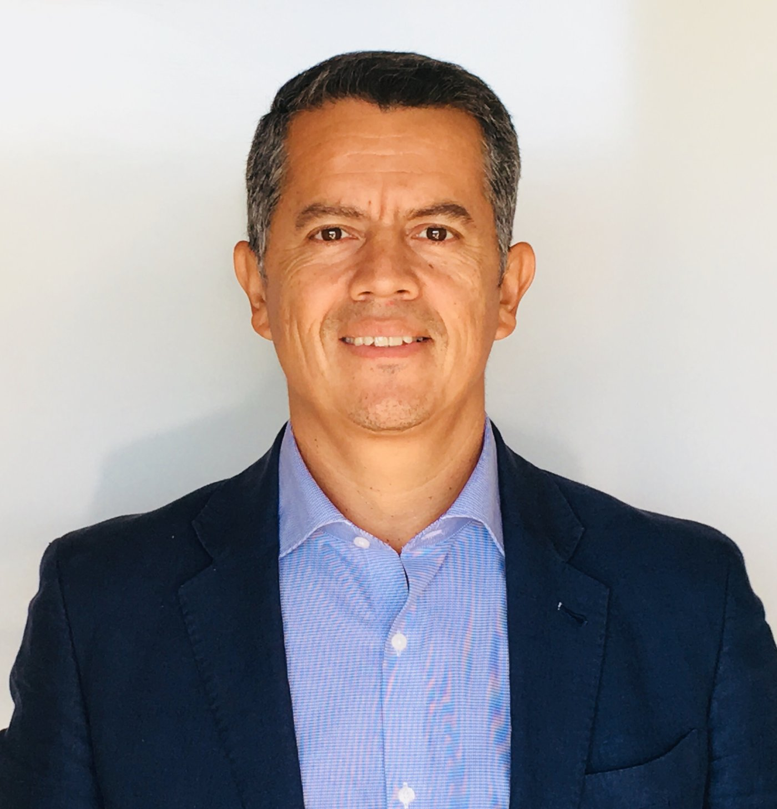

Cada día con hambre de crecer, aprender, ser más y dar más. Mi porqué es servir a las personas al más alto nivel — ayudarte no solo a lograr, sino a sentirte realizado en el camino de conseguir grandes cosas. Every day with a hunger to grow, learn, be more and give more. My why is serving people at the highest level — helping you not just achieve, but feel fulfilled on the path to achieving great things.

20+ años en liderazgo corporativo internacional: Amway, Weight Watchers, Mail Boxes Etc. y Picking Pack — operaciones, redes de franquicia, desarrollo de negocio y transformación cultural en España y Europa. 20+ years in international corporate leadership: Amway, Weight Watchers, Mail Boxes Etc. and Picking Pack — operations, franchise networks, business development and cultural transformation across Spain and Europe.
PCC (ICF) desde 2010, 6.000+ horas de coaching ejecutivo con líderes de organizaciones globales, muchas del S&P 500, en servicios financieros, farmacéutica, energía, telecomunicaciones y FMCG. PCC (ICF) since 2010, 6,000+ hours of executive coaching with leaders from global organizations, many from the S&P 500, in financial services, pharma, energy, telecom and FMCG.
International Coaching Federation (ICF)
Certified Practitioner
International Practitioner
NLP Practitioner — Institut Gestalt Barcelona · Business Administration — Northern Virginia Community College (USA)
Desde hace dos años colaboro, sin coste, como responsable de estrategia y escalado con el TRAM Barcelona Open, el torneo de tenis en silla de ruedas de Barcelona. Conocí a su fundador y su historia me inspiró a ayudarle a hacer crecer su sueño. En 2026, el torneo alcanzó la categoría ITF1000 — Super Series —, la más alta del circuito fuera de los Grand Slam, y Barcelona se convirtió en una de solo cinco sedes del mundo con ese nivel. No ha sido gracias a mí — el mérito es de su equipo y de los jugadores —, pero sigo colaborando porque creo en lo que representa: inclusión real, no solo deporte. For the past two years I’ve collaborated, at no cost, as strategy and scaling lead with the TRAM Barcelona Open, Barcelona’s wheelchair tennis tournament. I met its founder and his story inspired me to help him grow his dream. In 2026, the tournament reached ITF1000 — Super Series — category, the highest on the circuit outside the Grand Slams, making Barcelona one of only five hosts in the world at that level. None of that is thanks to me — the credit belongs to its team and its players — but I keep collaborating because I believe in what it represents: real inclusion, not just sport.
Conoce el torneo →Learn about the tournament →HBR, Anthony Robbins, Adam Grant, Verne Harnish (Scaling Up), Carol Dweck (Mindset), McKinsey & Company, Ray Dalio, Yuval Noah Harari (Nexus), Rich Litvin (The Prosperous Coach), Stephen Covey, Alan Weiss (Million Dollar Consulting).